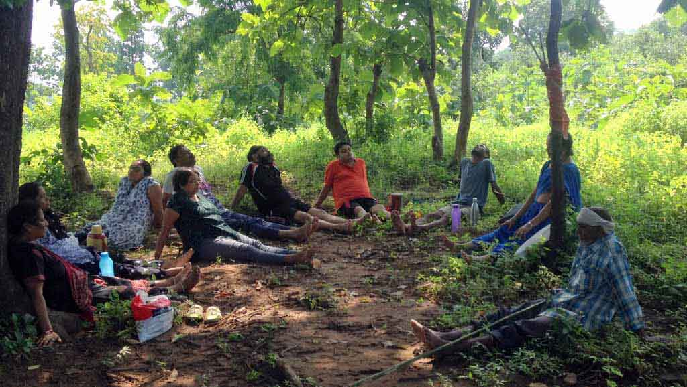

29-30 December 2016 / Paint and Print: wall painting and fabric screen printing
31 Dec - 1 Jan 2017 / New Year Celebration!
2-3 Jan 2017: Writing Retreat
Contribution: Rs.600/event (inclusive of food and stay)
Register latest by 25 Dec 2016
See event poster for details. Contact us to register!
Sehatvan is a healing space for body, mind and soul. It wishes to host healing programs for health and arts. Bordering a 4000-acre forest, it is a place to connect back to nature. It is hand-made using natural materials and traditional knowledge. Also, it dreams of becoming a tiny forest and vegetable garden in its own.
It has shared accommodation for 20 people and plenty of tenting space. We are trying to be sustainable in all living systems (food, water, energy, waste etc.). It is situated 25km from Bhopal.
To know more about our work with reversing Diabetes, BP, Thyroid and other lifestyle diseases, click here.
Sehatvan organises workshops, retreats and gatherings related to health, arts and society. All the program are designed to involve one's head, heart & hands and deep connection with nature. There are regular programs by Diabetes Trust on reversing lifestyle diseases. See our future Programs.
Sehatvan is open to be a hosting space. If you wish to host a workshop, a retreat or a gathering, we can collaborate. Contact Us.
We are open to hosting 1-2 people at a time who wish to work on their personal projects related to art, media, technology, writing etc. The resident must commit a few hours every day towards community work around cooking, taking care of plants or other related farm work. Least duration is 1 week. A modest amount will be charged for food. Please write to us about with a brief about you and your project to us.
If you wish to work on a project idea that relates to sustainability (food, water, energy, plants etc), you are welcome to try it out at Sehatvan. If it connects with our needs, we can support with material, space and living.
If you wish to take a break from the urban life and connect back to nature, this can be a good opportunity. You can join our team to developing Sehatvan, hosting programs, taking care of plants, working on water harvesting etc. In return, we will take care of your food and stay. This can be a good sabbatical from busy life and you can use the time to develop your hobbies too. Least duration is 4 weeks.
You are welcome to stay with us for a short visit or 3-4 days or a weekend. There are plenty of options for nature walks, bird watching, camping, working with mud, wall paintings etc. You will be charged towards food and stay.
If you like our endeavour, you can support us in other ways too -
Sehatvan is 25km off Bhopal.
Road: Bhopal, being the capital city of Madhya Pradesh is well connected with highways to major cities of Mp and neighbouring states.
Train: There are many direct trains from Delhi, Mumbai, Bangalore etc. It is well connected by trains.
Air: Bhopal has direct flights from Mumbai and Delhi.
Public Transport
Train: Sehatvan is 1.5 km hike away from Bhadbhada ghat railway station. There are 4 passenger trains which run from Bhopal and stop at this station. None of the express trains stop at this station. I takes 25 mins from Bhopal to Bhadbhada Ghat
Road: From Bhopal Railway station: Take a shared auto to Bhanpur. Then take a shared auto from Bhanpur to Amoni (it goes via Sukhi sewanian). Alternatively one can take a bus or shared auto to sukhi sewanian and then one to Amoni.
IMP: 2km before Amoni, there is a ghat. Get down right after coming down of the ghat (two hairpin bends). There is a mud road going towards the left. Follow that till you reach a small stream (dries up in march-june). Cross that and follow the path on the left. Move till you reach sehatvan on your right. The whole path after you get down from the road is 1km. This path is motorable with a vehicle of high ground clearance (alto/swift is good enough)
Private Transport: Hire an auto from Bhopal Railway station to Amoni village. It shall charge INR 250-300. Take him through the mud road mentioned above.
If you can giveaway, donate or sell any of the following equipment, please let us know.
*Seeds! - of traditional or varieities which don't require pesticide or chemical fertilisers. Especially those that need less water.
*Sleeping bags/Blankets
*Hobby tools- natural paints, paint brushes, screen printing equipment, handmade paper
*Solar equipment - lanterns, panels, DC bulbs, inverter. We also wish for a solar setup for water pump
*Battery bank
*Snake tongs / hook
*Bird caller
*Binocular
*Musical instruments
{kind=link}